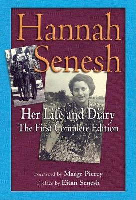

9:49 · 1 OPERA
Hannah Szenes: Ci sono stelle.
Il filo del discorso
Il contributo ricorda Hannah Szenes attraverso un profilo della sua scelta di resistenza e la lettura del testo Ci sono stelle. La luce che continua ad arrivare dopo la scomparsa della stella diventa immagine della memoria di persone capaci di orientare gli altri. Dr Divago estende questa figura alla cultura, i cui messaggi possono attraversare i secoli e offrire una direzione nei momenti oscuri.
I libri nel discorso

Ci sono stelle (Yesh Kochavim)
Raccolta di scritti della stessa autrice: Jewish Lights · Hannah Senesh: Her Life and Diary · 2007
Copertina della raccolta di diari, lettere e poesie Hannah Senesh: Her Life and Diary (Jewish Lights, 2007), usata come riferimento iconografico della stessa autrice. Non è un’edizione autonoma di Ci sono stelle; collocazione del testo e volume usato nel video non accertati.
Titolo originale e italiano annunciati prima della lettura.
Passaggio 4:49 ↗ · Fonti e libro ↗